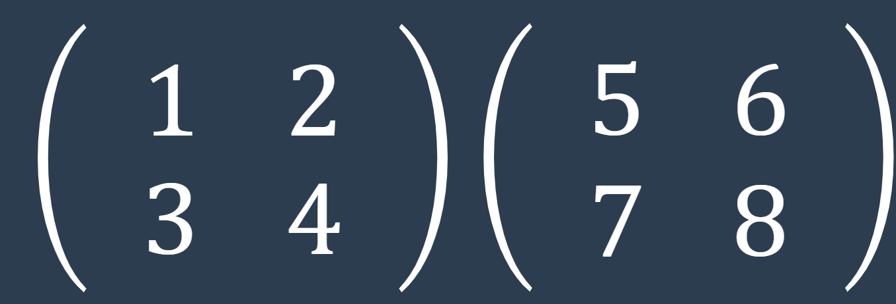
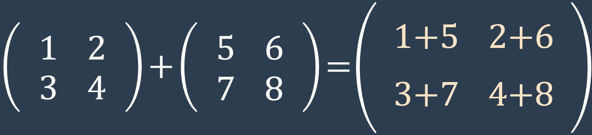
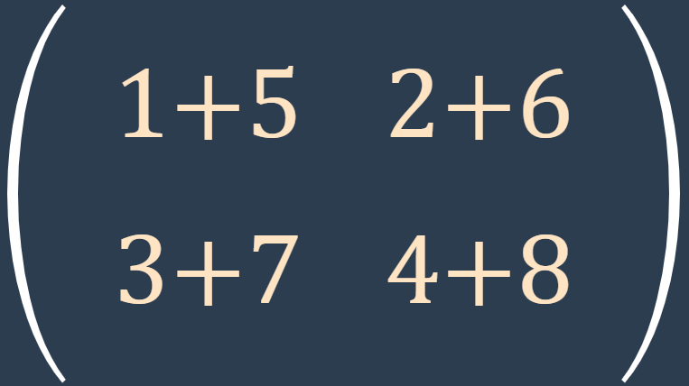
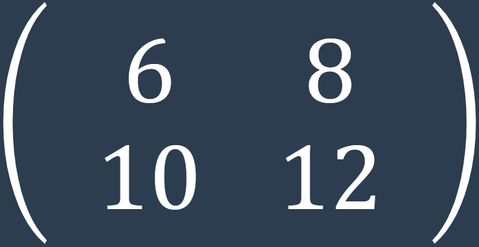

La suma y resta de matrices son operaciones fundamentales en álgebra lineal. Estas operaciones nos permiten combinar matrices para obtener una nueva matriz resultante.
Verificar Tamaño: Antes de sumar o restar dos matrices, es importante asegurarse de que tengan la misma cantidad de filas y columnas. Solo las matrices con el mismo tamaño se pueden sumar o restar.
Identificar Elementos: Una vez que se ha verificado que las matrices tienen el mismo tamaño, se deben identificar los elementos correspondientes que se sumarán o restarán. Para ello, se comparan las posiciones de los elementos en las dos matrices.
Realizar Operación: Suma o resta los elementos correspondientes de las matrices. Es decir, toma el elemento en la posición (i, j) de la primera matriz y el elemento en la misma posición (i, j) de la segunda matriz, y suma o resta esos elementos uno a uno.
Construir la matriz resultante: A medida que se suman o restan los elementos correspondientes, se construye una nueva matriz que contendrá los resultados de la operación. Cada elemento de la nueva matriz será el resuldato de la operación de los elementos correspondientes de las matrices originales.
Es importante destacar que la suma o resta de matrices conserva las dimensiones de las matrices originales, es decir, si A y B son matrices de tamaño 2 x 2, entonces A +/- B también será una matriz de tamaño 2 x 2.
Supongamos las matrices:
Paso 1: Verificar tamaño: Ambas matrices tienen dimensión 2x2, por lo que son compatibles.
Paso 2: Identificar elementos: Se comparan las posiciones de los elementos correspondientes en las dos matrices
Paso 3: Realizar operación: Suma
Paso 4: Construir resultado:
La suma y resta de matrices son conceptos esenciales en matemáticas y tienen diversas aplicaciones en campos como la informática, la física y la ingeniería.